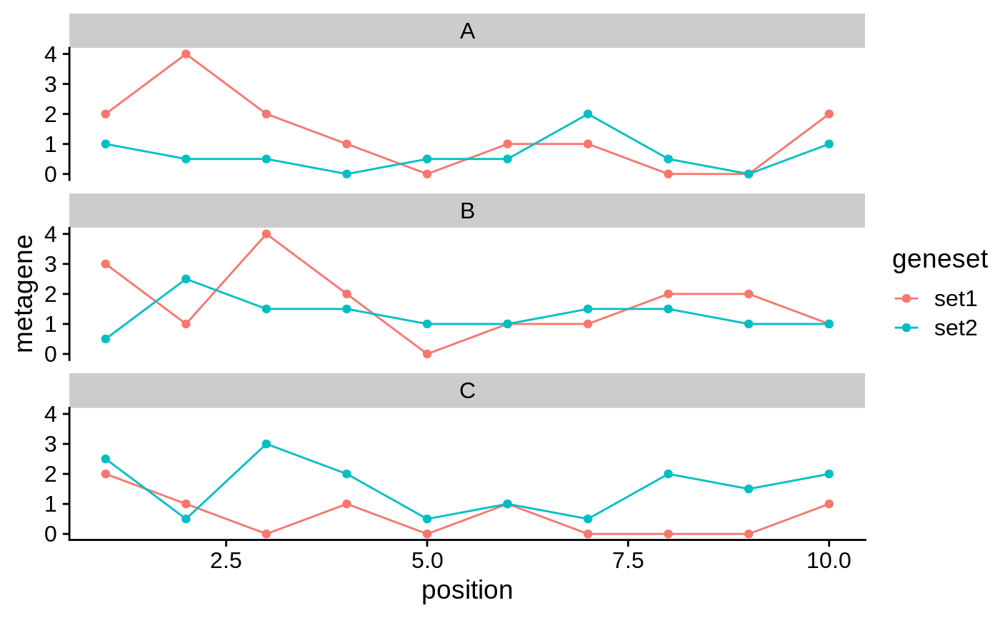

R/makeMetageneDataFrame.R
makeMetageneDataFrame.RdThis function takes a list of data sets stratified by samples and gene sets.
It computes the metagene for each gene set in each sample, and returns
a data.frame suitable for ggplot2::ggplot().
makeMetageneDataFrame(list, assay.type = "matrix")
| list | A named list of lists of SummarizedExperiment objects.
Each item in the top-most list is a named sample (e.g. "replicate1").
Each item within each sublist is a named gene set (e.g. "upregulated").
Each SummarizedExperiment object stores matrix of histone modification enrichment,
with |
|---|---|
| assay.type | Name the assay to average between all samples. |
A data.frame with columns named:
"sample"
"geneset"
"position"
importDeeptoolsExperiment
#> #>#>#>#> #>#>theme_set(theme_cowplot()) # Prepare example data ---- sample_names <- c("A", "B", "C") se_list <- generateDeeptoolsExperiments(20, 10, sample_names) se_list#> $A #> class: RangedSummarizedExperiment #> dim: 20 10 #> metadata(0): #> assays(1): matrix #> rownames(20): GR_1 GR_2 ... GR_19 GR_20 #> rowData names(0): #> colnames(10): 1 2 ... 9 10 #> colData names(0): #> #> $B #> class: RangedSummarizedExperiment #> dim: 20 10 #> metadata(0): #> assays(1): matrix #> rownames(20): GR_1 GR_2 ... GR_19 GR_20 #> rowData names(0): #> colnames(10): 1 2 ... 9 10 #> colData names(0): #> #> $C #> class: RangedSummarizedExperiment #> dim: 20 10 #> metadata(0): #> assays(1): matrix #> rownames(20): GR_1 GR_2 ... GR_19 GR_20 #> rowData names(0): #> colnames(10): 1 2 ... 9 10 #> colData names(0): #># Split each sample into gene subsets ---- range_sets <- list(set1=c("GR_1"), set2=c("GR_2", "GR_3")) se_list_list <- lapply(se_list, splitByGeneSet, range_sets) # Usage ---- x <- makeMetageneDataFrame(se_list_list) ggplot(x, aes(position, metagene, color=geneset)) + geom_line(aes(group=interaction(geneset, sample))) + geom_point() + facet_wrap(~sample, ncol=1)